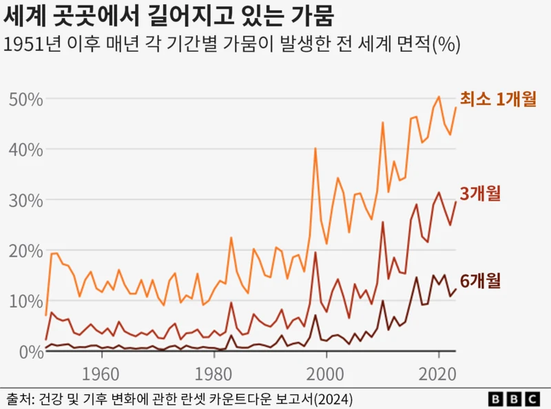
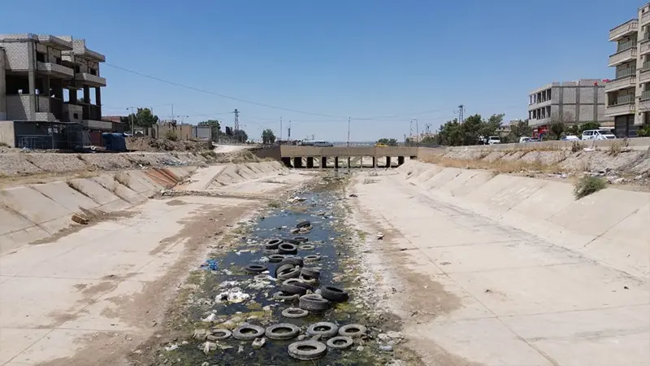

1980년대 이후 극심한 가뭄 지역 3배 넓어져 - 연구 결과
기후변화는 전 지구적 생태계에 심각한 영향을 미치고 있으며, 특히 가뭄 현상이 빠르게 확산되고 있다. 최근 연구에 따르면, 1980년대 이후로 극심한 가뭄 지역의 면적이 무려 3배 이상 넓어졌다고 한다. 이는 농업 생산성과 식량 안보에 직접적인 위협이 되고 있으며, 전 세계적인 물 부족 현상도 가속화되고 있다. 미국의 퍼시픽 노스웨스트, 호주 남동부, 브라질 북동부, 남아프리카 등 주요 지역들이 큰 피해를 입고 있다. 특히 장기적인 강수량 감소와 지하수 고갈이 동시에 발생하면서 생태계 복원력마저 약화되고 있다. 국제사회는 이를 해결하기 위해 보다 긴급하고 포괄적인 기후 대응 전략을 요구받고 있다.

출처(이미지 클릭): BBC 코리아 (2024년 11월 2일)
기후변화로 2030년 최소 25만명 초과 사망 예상
세계보건기구(WHO)의 예측에 따르면, 기후변화는 단지 환경 문제를 넘어 인류 건강에도 막대한 위협이 되고 있다. 영양실조, 말라리아, 열 스트레스와 같은 질병이 기후변화로 인해 더욱 악화될 것으로 전망된다. 특히 취약 계층과 개발도상국의 피해가 집중될 것으로 예상되며, 이에 대한 국제사회의 관심과 대응이 절실하다. WHO는 2030년부터 매년 최소 25만 명이 이로 인해 사망할 수 있다고 경고하고 있다. 기후 위기는 의료 시스템의 부담을 증가시키고, 동시에 사회적 불평등을 심화시킬 수 있는 요인이기도 하다. 따라서 지금 당장 온실가스 감축 및 기후 적응 정책의 강화가 필요한 시점이다.

출처(이미지 클릭): 환경일보
관련 동영상
당신의 의견을 들려주세요
환경을 위해 할 수 있는 일
- - 재활용하기
- - 물 아껴쓰기
- - 전기 절약하기
- - 대중교통 이용하기